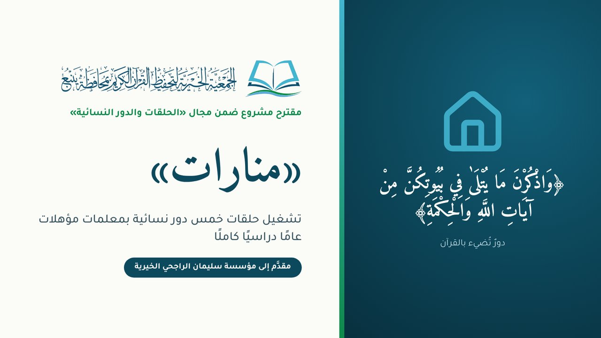
الحلقات والتأسيس
منارات
تشغيل خمس دور نسائية بمعلمات مؤهلات عامًا دراسيًا كاملًا
- المبلغ
- 218,200 ريال
- المستفيدون
- 500 طالبة ودارسة في 20 حلقة
مشاريع الجمعية المقدَّمة للجهات المانحة في مكان واحد
فترة المنح الأولى 1448هـ · رفع المشاريع 11 إلى 19 نوفمبر

تشغيل خمس دور نسائية بمعلمات مؤهلات عامًا دراسيًا كاملًا
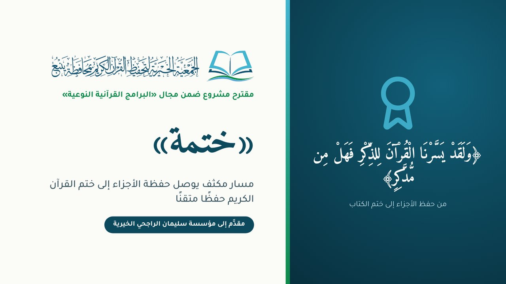
مسار مكثف يوصل حفظة الأجزاء إلى ختم القرآن الكريم
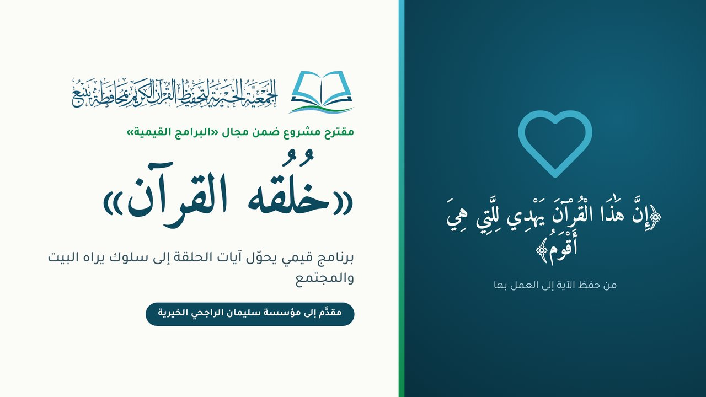
برنامج قيمي يحوّل آيات الحلقة إلى سلوك يراه البيت والمجتمع
مسار المنح النوعي
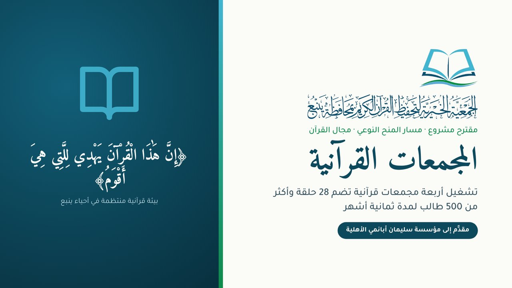
أربعة مجمعات قائمة في أربعة أحياء، بقياس قبلي وبعدي للأثر
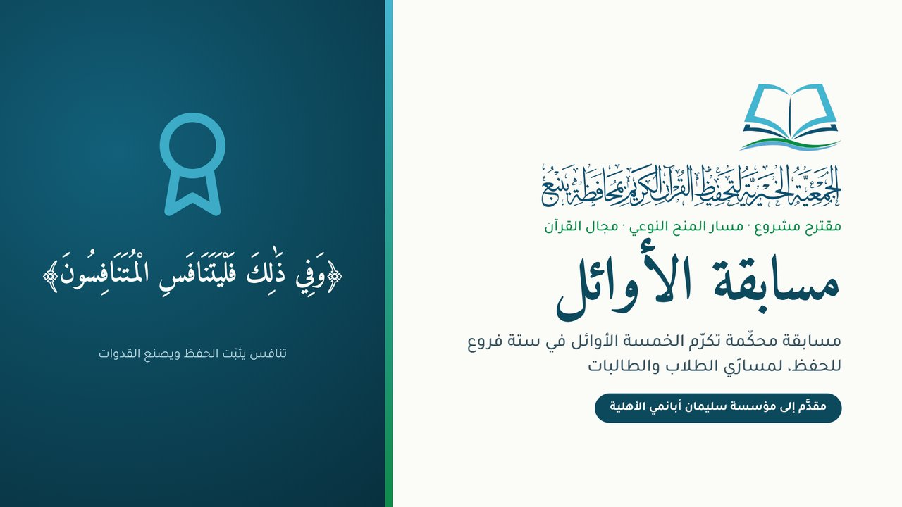
مسابقة محكّمة تكرّم الخمسة الأوائل في ستة فروع للحفظ
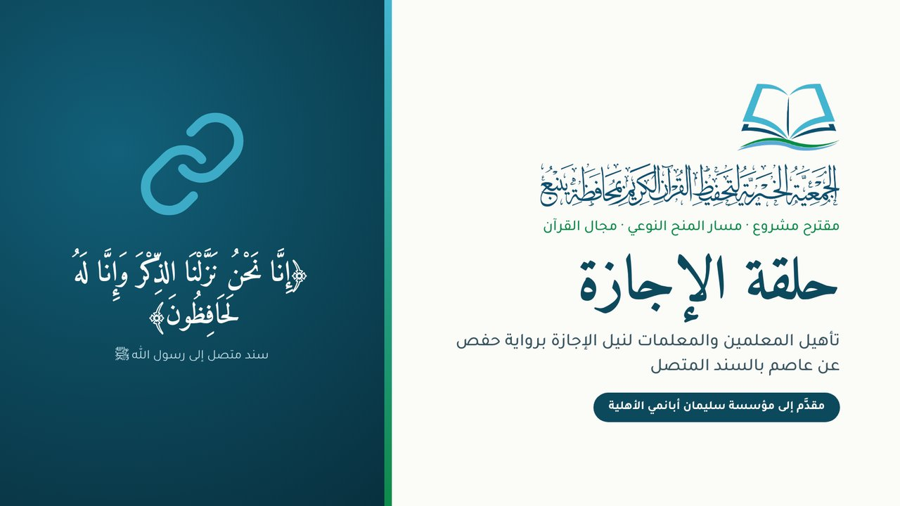
تأهيل المعلمين والمعلمات لنيل الإجازة برواية حفص بالسند المتصل
إعداد قرّاء متقنين للقراءات، ينتهي بالإجازة بالسند المتصل
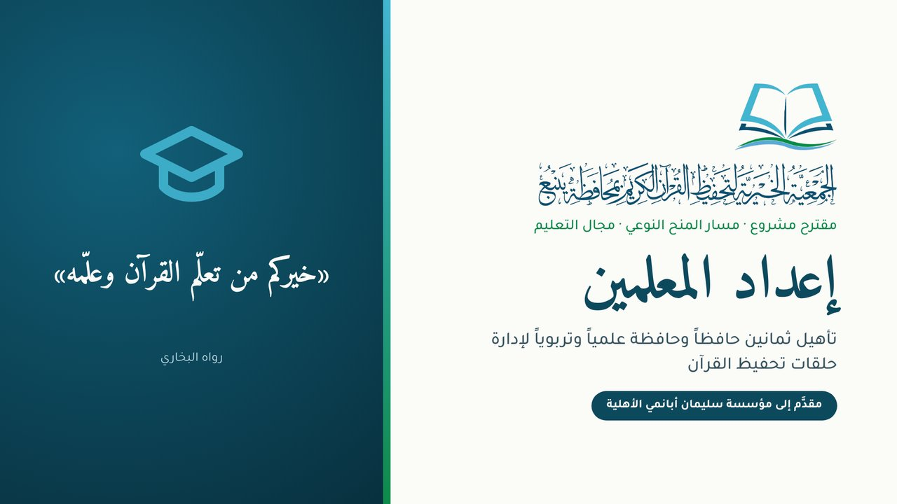
تأهيل الحفظة علمياً وتربوياً لإدارة حلقات التحفيظ
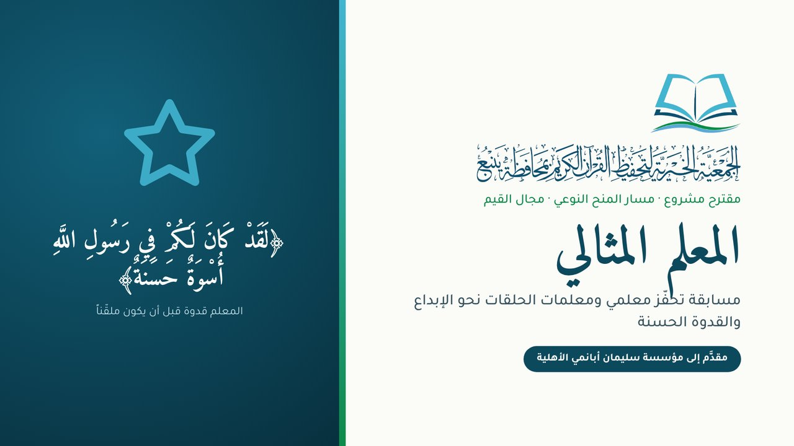
مسابقة تحفّز معلمي الحلقات ومعلماتها على الإبداع والقدوة الحسنة
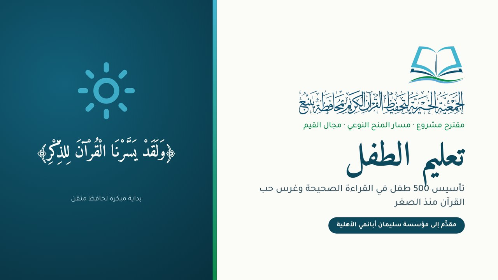
تأسيس الأطفال في القراءة الصحيحة وغرس حب القرآن منذ الصغر
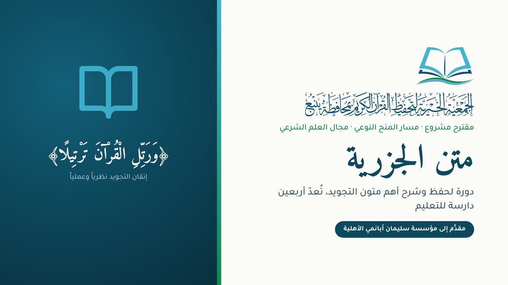
دورة لحفظ أهم متون التجويد وشرحه، تُعدّ الدارسات للتعليم
منح الوقف
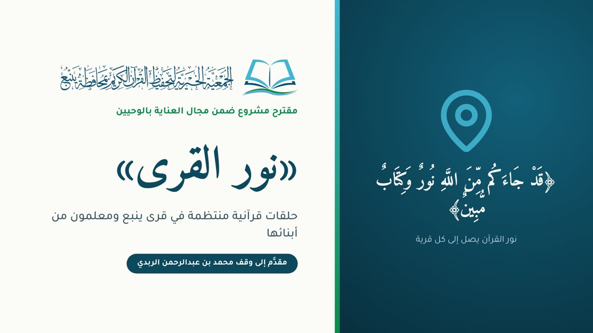
حلقات قرآنية منتظمة في قرى ينبع، ومعلمون من أبنائها
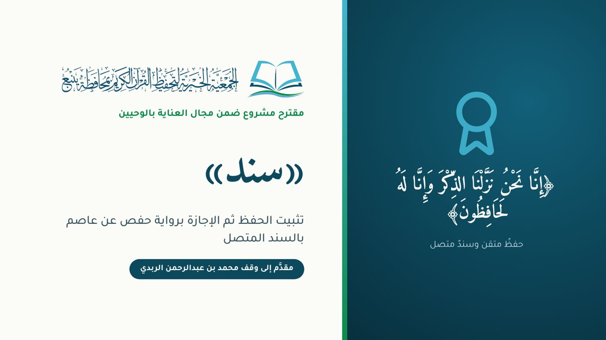
تثبيت الحفظ ثم الإجازة برواية حفص عن عاصم بالسند المتصل
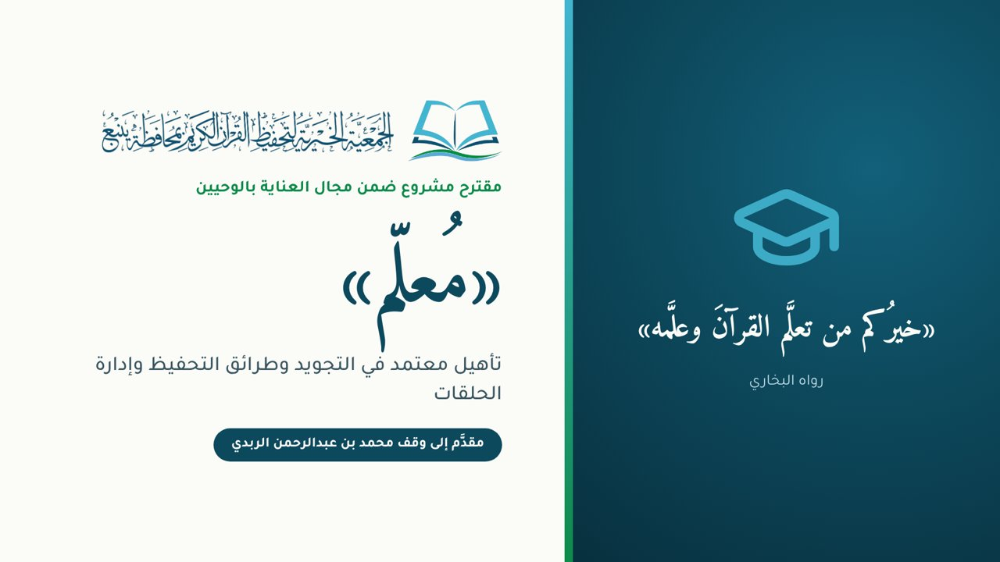
تأهيل معتمد في التجويد وطرائق التحفيظ وإدارة الحلقات
منح عام 2027م
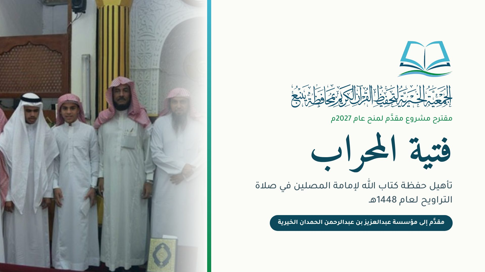
تأهيل حفظة كتاب الله لإمامة المصلين في صلاة التراويح
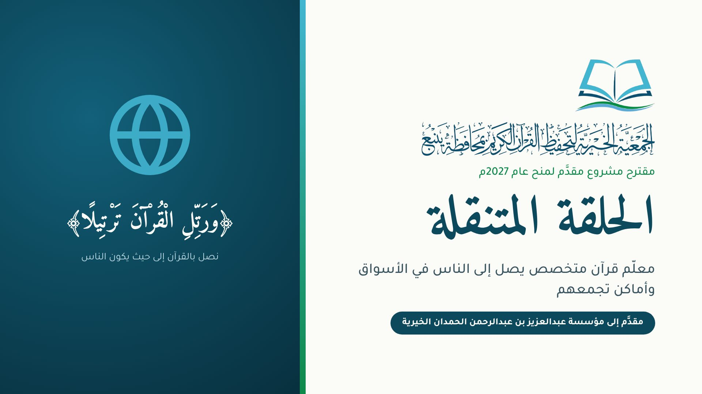
معلّم قرآن متخصص يصل إلى الناس في الأسواق وأماكن تجمعهم
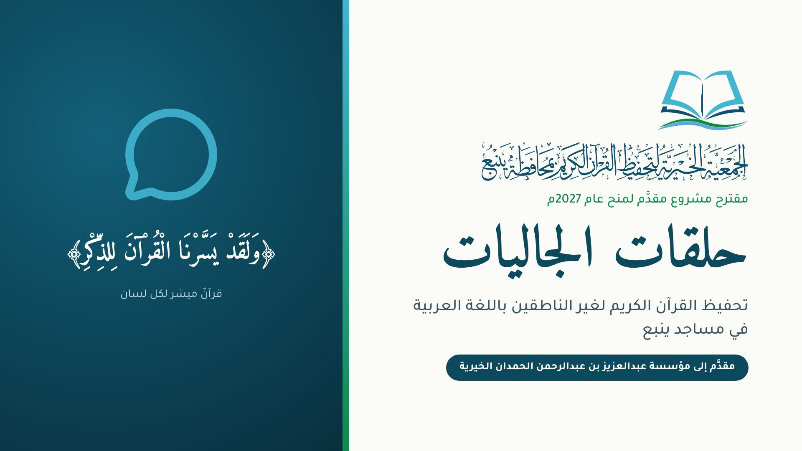
تحفيظ القرآن الكريم لغير الناطقين باللغة العربية
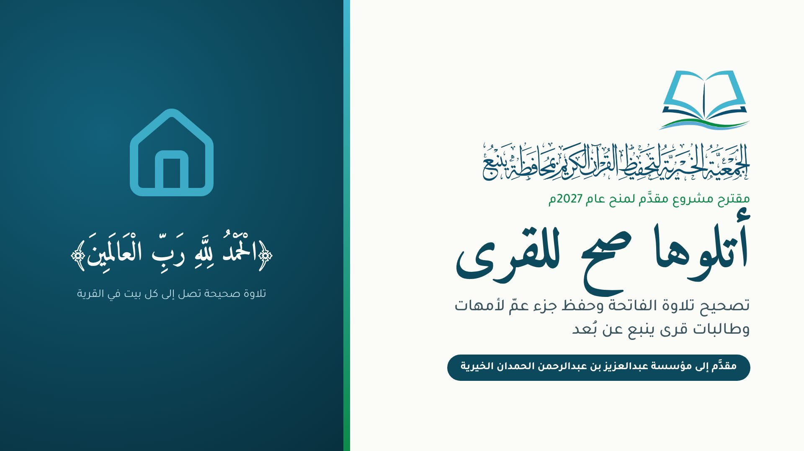
تصحيح تلاوة الفاتحة وحفظ جزء عمّ لأمهات القرى وطالباتها عن بُعد
حلقات منتظمة تحفظ الطلاب وتؤسس المبتدئين في المجمعات والقرى والدور النسائية
تشغيل خمس دور نسائية بمعلمات مؤهلات عامًا دراسيًا كاملًا
أربعة مجمعات قائمة في أربعة أحياء، بقياس قبلي وبعدي للأثر
حلقات قرآنية منتظمة في قرى ينبع، ومعلمون من أبنائها
تأسيس الأطفال في القراءة الصحيحة وغرس حب القرآن منذ الصغر
جودة الحلقة تبدأ من معلم مؤهل ومحفَّز
تأهيل معتمد في التجويد وطرائق التحفيظ وإدارة الحلقات
تأهيل الحفظة علمياً وتربوياً لإدارة حلقات التحفيظ
مسابقة تحفّز معلمي الحلقات ومعلماتها على الإبداع والقدوة الحسنة
من تثبيت الحفظ إلى الإجازة بالسند المتصل والقراءات
تثبيت الحفظ ثم الإجازة برواية حفص عن عاصم بالسند المتصل
تأهيل المعلمين والمعلمات لنيل الإجازة برواية حفص بالسند المتصل
إعداد قرّاء متقنين للقراءات، ينتهي بالإجازة بالسند المتصل
دورة لحفظ أهم متون التجويد وشرحه، تُعدّ الدارسات للتعليم
مسارات وحوافز تُخرج الخاتمين وأئمة المحاريب
مسار مكثف يوصل حفظة الأجزاء إلى ختم القرآن الكريم
تأهيل حفظة كتاب الله لإمامة المصلين في صلاة التراويح
مسابقة محكّمة تكرّم الخمسة الأوائل في ستة فروع للحفظ
قيم القرآن سلوكًا يراه البيت والمجتمع
برنامج قيمي يحوّل آيات الحلقة إلى سلوك يراه البيت والمجتمع
القرآن يصل إلى الأسواق والجاليات وأمهات القرى
معلّم قرآن متخصص يصل إلى الناس في الأسواق وأماكن تجمعهم
تحفيظ القرآن الكريم لغير الناطقين باللغة العربية
تصحيح تلاوة الفاتحة وحفظ جزء عمّ لأمهات القرى وطالباتها عن بُعد
جديد: مشاريع الدعم الجزئي، ستة مشاريع مستقلة قائمة، كل منها أقل من 30 ألف ريال، للتقديم على منح الراجحي 1448هـ.
كل مشروع مقدَّم لجهة واحدة فقط تفادياً لازدواج التمويل. ويمكن عند الحاجة نقل «المجمعات القرآنية» إلى مجال التعليم في منح الحمدان بدلاً من أبانمي.